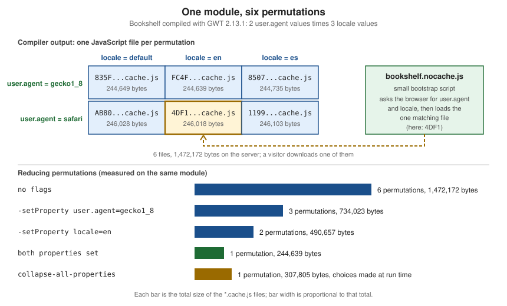

Compiler & Compilation
|
This content was generated with the assistance of AI and should be verified against the official documentation before being relied on in production. |
This page is written against GWT 2.13.1 (2026-06-19), gwt-maven-plugin 1.3.0 and the Jakarta Servlet 6 stack of the
modular-webapp archetype, checked on 2026-10-08. Every command and every output block was produced with JDK 21 on the
Bookshelf scenario of this section (a three-module application with English and Spanish locales, a DataGrid and one
GWT.runAsync split point). It is build and tooling knowledge: the compiler runs on the developer machine or in
CI, it reads client and shared Java source and writes the JavaScript that the browser downloads. The server code
is not compiled by it. The compiler needs Java 11 or later to run (and the 2.13 release notes say 2.13 is likely the last
release that runs it on Java 11), and it accepts source levels 8, 9, 10, 11 and 17 (see Source level and the stale default).
What the compiler does
com.google.gwt.dev.Compiler is the production-mode compiler. It takes the name of one or more modules (a
*.gwt.xml file found on the classpath, see Project structure and modules) and turns the Java source reachable from
that module’s entry points into JavaScript. It does this in three steps, which show up as separate pieces of the output:
com.example.bookshelf.App"] --> pre["Precompile
parse Java source, run generators,
resolve every deferred-binding answer"] pre --> perms["Compile permutations
one optimised JavaScript program
per combination of property values"] perms --> link["Link
linkers write nocache.js, cache.js,
policy files, symbol maps, reports"] link --> war["-war directory
(servable files)"] link --> deploy["-deploy directory
(not servable)"] link --> extra["-extra directory
(not for deployment)"]
-
Precompile parses the Java source on the module’s source path, validates it against the JRE emulation, runs the generators (UiBinder, ClientBundle, i18n, GWT-RPC proxies and others) and computes, for every deferred-binding question, the answer in each permutation. This is where "No source code is available" errors come from.
-
Compile permutations produces one JavaScript program for each permutation. Optimisation, output style, assertions and runtime checks all apply here, and so does
-localWorkers. -
Link hands the results to the linkers configured in the module (by default
xsiframe, see Linkers and bootstrap and the Linkers page of the official guide) which write the final files.
The tool exits with status 0 on success and 1 on failure, which is what makes it usable from a script or CI job.
Running the compiler
The compiler is an ordinary Java main class in gwt-dev. Its classpath must contain gwt-user, gwt-dev, the validation
and other dependencies of the project, the Java source of the client and shared code (not only the compiled classes,
because GWT compiles from source) and the module descriptors. Source directories should come first. With Maven the
simplest way to get the dependency part is to let the build print it:
mvn -B dependency:build-classpath -Dmdep.outputFile=cp.txt # run inside bookshelf-client
export JAVA_HOME=/path/to/jdk-21
CP="bookshelf-client/src/main/java:bookshelf-client/src/main/resources:bookshelf-client/target/classes"
CP="$CP:bookshelf-shared/src/main/java:bookshelf-shared/target/classes:$(cat cp.txt)"
$JAVA_HOME/bin/java -cp "$CP" com.google.gwt.dev.Compiler \
-war out/default/war -workDir out/default/work -extra out/default/extra \
com.example.bookshelf.AppThe module com.example.bookshelf.App is generated by gwt-maven-plugin from src/main/module.gwt.xml into
target/classes (that is why target/classes is on the classpath) and carries rename-to="bookshelf", so the output
lives in a bookshelf folder. The default run printed:
Compiling module com.example.bookshelf.App
Computing all possible rebind results for 'com.example.bookshelf.client.i18n.AppMessages'
Rebinding com.example.bookshelf.client.i18n.AppMessages
Invoking generator com.google.gwt.i18n.rebind.LocalizableGenerator
Processing interface com.example.bookshelf.client.i18n.AppMessages
Generating method body for copies()
[WARN] Plural form 'one' unknown in com.google.gwt.i18n.client.impl.plurals.DefaultRule: ignoring
Compiling 6 permutations
Compiling permutation 0...
Compiling permutation 1...
Compiling permutation 2...
Compiling permutation 3...
Compiling permutation 4...
Compiling permutation 5...
Compile of permutations succeeded
Compilation succeeded -- 12,280s
Linking into .../out/default/war/bookshelf; Writing extras to .../out/default/extra/bookshelf
Link succeeded
Linking succeeded -- 0,107s(The warning about the plural form one is a real finding about the Internationalization page, not noise: a message
with a plural form needs a locale-specific properties file even for English.) The numbers to read in that output are
"Compiling 6 permutations" (see Permutations) and the time. Times in this page come from a laptop that was running other
jobs, so treat them as orders of magnitude and compare sizes, which are exact.
With no arguments the compiler prints its usage and the first problem it found:
Missing required argument 'module[s]'
GWT Web Toolkit 2.13.1
Compiler [-logLevel (ERROR|WARN|INFO|TRACE|DEBUG|SPAM|ALL)] [-workDir dir] [-X[no]closureFormattedOutput] [-[no]compileReport] [-X[no]checkCasts] [-X[no]classMetadata] [-[no]draftCompile] [-[no]checkAssertions] [-XfragmentCount numFragments] [-gen dir] [-[no]generateJsInteropExports] [-includeJsInteropExports/excludeJsInteropExports regex] [-XmethodNameDisplayMode (NONE|ONLY_METHOD_NAME|ABBREVIATED|FULL)] [-Xnamespace (NONE|PACKAGE)] [-optimize level] [-[no]saveSource] [-setProperty name=value,value...] [-style (DETAILED|OBFUSCATED|PRETTY)] [-[no]failOnError] [-[no]validateOnly] [-sourceLevel [auto, 1.8, 9, 10, 11, 17]] [-localWorkers count] [-[no]incremental] [-war dir] [-deploy dir] [-extra dir] [-saveSourceOutput dir] module[s]The [no] notation means that a boolean flag has a -name and a -noname form, and the -X prefix marks an
experimental flag. The help text of the version in use is the authoritative list, because the options "can differ
slightly from version to version", as the official page itself says. Several flags have older spellings that still work:
-strict for -failOnError, -ea for -checkAssertions, -XcompilePerFile for -incremental, and
-XdisableCastChecking and -XdisableClassMetadata for the experimental flags with the same labels.
Flag reference
The tables below follow the help text of 2.13.1, which is also what the Developer Guide page "Compiling and Debugging"
prints. The "Measured" column states the effect on the Bookshelf (one permutation, user.agent=gecko1_8,
locale=en, 244,639 bytes of main JavaScript with the default flags) so that the abstract descriptions have a
size attached.
Output locations
| Flag | Meaning | Default and notes |
|---|---|---|
|
Directory for the files a web server serves: the |
|
|
Files that must be deployed with the server but never served to browsers (RPC policy manifests, symbol maps). |
|
|
Files that are not meant for deployment: CSS class maps, compile reports, symbol maps, saved sources. |
A run without |
|
The compiler’s scratch directory for intermediate results. Must be writable. |
A temporary directory ( |
|
Saves the Java types generators normally keep in memory (for example |
Not set. A run of the Bookshelf wrote 58 generated files. |
|
Overrides where the sources needed by debuggers are written (see Source maps and |
Saved with the extras. |
Speed, size and output style
| Flag | Meaning | Default and notes |
|---|---|---|
|
Style of the generated JavaScript (see Output styles). |
|
|
Optimisation level, 0 (none) to 9 (maximum). The level is the number of optimiser passes allowed; level 9 repeats passes until they stop paying off. |
9. Values above 9 are accepted and treated as 9. Measured: level 0 578,267 bytes, 1 302,158, 3 275,348, 6 244,651, 9 244,639. |
|
Compile quickly with minimal optimisations: optimisation level 0, no function clustering, no duplicate-function
removal, no literal-parameter inlining, no enum ordinalisation, no dataflow optimisation and the |
Off. Measured: 578,263 bytes, versus 244,639. Never ship a draft compile. |
|
Number of permutation workers that compile permutations in parallel. In-process worker threads are capped by the system property |
1. The Maven plugin additionally accepts a count with a |
|
Reuses data from the previous compile of the same process, which is what the code server uses for fast recompiles. |
Off. It forces optimisation level 0, turns code splitting ( |
|
Experimental: limits the number of fragments when the code splitter merges split points. |
Not set. |
Language level and validation
| Flag | Meaning | Default and notes |
|---|---|---|
|
Java language level of the source: |
|
|
Compiles Java |
Off. Measured: 251,703 bytes, 7,064 more than without. |
|
Fails the compile if any input file on the source path has an error, even a file the application never uses. |
Off on the command line (alias |
|
Validates all source code but compiles nothing and writes no output. |
Off. In the Bookshelf run no output directory was created and the exit status was 0. |
Properties, reports and diagnostics
| Flag | Meaning | Default and notes |
|---|---|---|
|
Fixes a deferred-binding property to one or more values for this compile (see Permutations). The flag may be repeated. |
Not set. An undefined value fails: |
|
Produces the "Story of Your Compile" HTML report (see The compile report). |
Off. |
|
Verbosity: |
|
|
Saves the sources needed by debuggers (see Source maps and |
Off. The help text refers to a |
JsInterop exports
| Flag | Meaning | Default and notes |
|---|---|---|
|
Generates the JavaScript exports requested by |
Off. Measured on the Bookshelf (all permutations fixed to one): the exported class |
|
Restrict the generated exports to classes and members matching (or not matching) a regular expression. Each may be given several times. |
Only effective together with |
The other tables describe flags that exist whether or not the JsInterop features are used. The experimental ones follow.
Experimental flags
The help text marks these with -X. They can change or disappear without a deprecation period:
| Flag | Meaning | Default and notes |
|---|---|---|
|
Keeps metadata for some |
On. |
|
Deprecated: use |
Off. |
|
Produces JavaScript suitable for post-processing with the Closure Compiler. |
Off. |
|
How method names are shown by Chrome DevTools: |
|
|
Puts most JavaScript globals into per-package namespaces instead of the global object, which reduces the number of globals and increases code size. |
|
Source level and the stale default
The Developer Guide page prints the compiler help verbatim, and the help says -sourceLevel [auto, 1.8, 9, 10, 11, 17]
and "defaults to 1.8". Two points about that statement, checked on 2.13.1 against the source and by running the compiler:
For the command-line compiler the statement is true. The argument processor applies -sourceLevel 1.8 when the flag is
absent. A client class using a Java 16 record, compiled under JDK 21 with no -sourceLevel, fails:
[ERROR] Line 8: Isbn cannot be resolved to a type
[ERROR] Line 5: This method must return a result of type record-sourceLevel 11 fails with the same two errors, while -sourceLevel 17 and -sourceLevel auto both succeed (exit 0). So the
default of the command-line compiler is 1.8 (the default argument is registered in ToolBase), not the level of the running JVM,
even though SourceLevel.DEFAULT_SOURCE_LEVEL in the source is computed from java.specification.version. That constant is what
auto resolves to, and the initial value inside the options objects used by tools that do not go through the command-line
parser. Java 12-17 syntax needs an explicit -sourceLevel 17. The gwt-maven-plugin <sourceLevel> parameter takes its default
from maven.compiler.source.
The statement is stale in its consequences. GWT has supported Java 12-17 language features (text blocks, instanceof
patterns, records, switch expressions) since 2.12.0, but none of them compile unless the build says so. The archetype therefore
sets <sourceLevel>17</sourceLevel> on gwt-maven-plugin (the plugin passes it through; its user property is
maven.compiler.source). There is no level between 11 and 17 and none above 17: -sourceLevel 21 is rejected. The help also
still lists the values from 1.8 upwards while the roadmap says Java 21 language features are a goal.
The decision for a project is simple: pass -sourceLevel 17 (or the Maven sourceLevel setting) explicitly, and keep the
release setting of maven-compiler-plugin aligned with it so the Java compiler and the GWT compiler accept the same language.
Output styles
-style controls readability, not behaviour. The same exported method, ExportedApi.formatCopies, in the three styles
(one permutation each, with -generateJsInteropExports):
// -style PRETTY: indented, original names kept where they are safe, 722,938 bytes for the whole file
function formatCopies(locale, n){
return (new $wnd.Intl.NumberFormat(locale)).format(n);
}
// -style DETAILED: PRETTY plus fully qualified names, 2,175,738 bytes
function com_example_bookshelf_client_interop_ExportedApi_formatCopies__Ljava_lang_String_2DLjava_lang_String_2(locale, n){
return (new $wnd.Intl.NumberFormat(locale)).format(n);
}
// -style OBFUSCATED (default): names shortened, no whitespace, 263,127 bytes; the export keeps its public name
function Qb(a,b){return (new $wnd.Intl.NumberFormat(a)).format(b)}
_=mJ('bookshelf.Api');_.formatCopies=Qb;_.install=Rb;_.open=Sb;For the Bookshelf without exports the three styles produced 244,639 (OBFUSCATED), 685,398 (PRETTY) and 2,074,085
(DETAILED) bytes. Use PRETTY or DETAILED only to read the output; production uses OBFUSCATED, which is also the
only style whose names an attacker cannot read straight off the page. Obfuscation is size and convenience, not secrecy:
never place secrets in client code in any style.
Assertions and runtime checks
Two settings decide how much checking code is compiled in.
-checkAssertions keeps Java assert statements. They throw an AssertionError in the browser, so use them in
development and in GWTTestCase runs (the Maven gwt:test goal sets enableAssertions), not in production.
jre.checks.checkLevel is a deferred-binding property defined by the JRE emulation (Preconditions.gwt.xml) that
chooses how many of the emulated library’s own checks (index bounds, API misuse, numeric and type errors) stay in the code.
It is set with -setProperty or <set-property> in a module:
| Value | Checks kept |
|---|---|
|
Bounds, API usage, numeric and type checks, plus the critical checks. |
|
Type checks ( |
|
Only the critical checks, the ones that protect an object from being left in an inconsistent state. |
$JAVA_HOME/bin/java -cp "$CP" com.google.gwt.dev.Compiler \
-war out/minimal/war -extra out/minimal/extra \
-setProperty jre.checks.checkLevel=MINIMAL \
-setProperty user.agent=gecko1_8 -setProperty locale=en \
com.example.bookshelf.AppThe Bookshelf main file shrank from 244,639 to 239,501 bytes (about 2 percent). Lower levels turn exceptions that Java
programs rely on (an IndexOutOfBoundsException from List.get) into undefined behaviour, so lowering the level is
an optimisation for code that is known to be correct, never a way to fix a bug. In development mode the checks always run,
converted to an AssertionError when a level disables them, so that reliance on the exceptions is found early;
that works only if the module uses the same level in every environment. The finer jre.checks.bounds, jre.checks.api,
jre.checks.numeric and jre.checks.type properties (AUTO, ENABLED or DISABLED) exist for the same purpose, and the
deprecated -XcheckCasts flag only sets jre.checks.type.
Failing the build: -failOnError and -validateOnly
By default the compiler is lenient. A source file with a compile error is ignored unless the application reaches it,
because GWT compiles only what the entry points can reach. Here a stray java.io.File (not part of the JRE emulation)
in a class nothing uses did not stop the compile:
Compiling module com.example.bookshelf.App
Ignored 1 unit with compilation errors in first pass.
Compile with -strict or with -logLevel set to TRACE or DEBUG to see all errors.
Compiling 1 permutation
Compiling permutation 0...(exit status 0). With -failOnError (or -strict), the same input fails:
Compiling module com.example.bookshelf.App
Tracing compile failure path for type 'com.example.bookshelf.client.Unused'
[ERROR] Errors in 'file:.../Unused.java'
[ERROR] Line 6: No source code is available for type java.io.File; did you forget to inherit a required module?
[ERROR] Aborting compile due to errors in some input files(exit status 1). When the unsupported class is reachable from the entry point, the compile fails even without the flag, with the same
error followed by [ERROR] Hint: Check the inheritance chain from your module; it may not be inheriting a required module or a module may not be adding its source path entries properly.
Turn failOnError on in every CI build: a lenient compile hides errors that appear later, in a different permutation or when
someone starts using the class. The 2.13.0 release notes added -strict support to test arguments for the same reason.
-validateOnly stops after the validation step. In the Bookshelf it printed only the i18n warning, wrote no output
directory and returned 0, which makes it a quick pre-commit or pull-request check; combined with -failOnError it fails with
the same messages as above.
Permutations
GWT sends every browser only the code it needs. To make that possible without runtime branching, the compiler compiles the
application once for every combination of the values of the deferred-binding properties the application depends on. Each
combination is a permutation, and each permutation becomes a complete JavaScript file. The properties come from two kinds of
place: GWT’s own modules (the user.agent property of UserAgent.gwt.xml has, in 2.13.1, the values gecko1_8 and safari)
and the application’s (the Bookshelf adds the locale values en and es to the default locale). Two user agents times three
locale values give the six permutations that the compiler announced, and the linker recorded which combination each file serves in
compilation-mappings.txt:
835F23C4C91F35C16134EADECD8176EA.cache.js
locale default
user.agent gecko1_8
FC4F940E55A77ADCFD927D04D9344D79.cache.js
locale en
user.agent gecko1_8
8507F9DE575C37A7ACB87038AFADD665.cache.js
locale es
user.agent gecko1_8
...Source: GWT — Linkers: Available linkers
(The file lists the six combinations followed by many compiler.* and ClientBundle.* settings of the first
permutation.) At run time the small bookshelf.nocache.js script computes the same properties in the browser (the user agent,
the locale from the locale query parameter or a <meta> tag; a cookie only when locale.cookie is configured) and loads exactly one of the files.

What permutations cost
Permutations multiply compile time and the size of the output directory, not what a visitor downloads. In the Bookshelf the
six files add up to 1,472,172 bytes on the server but a browser fetches one of about 245 KB. A project with five locales and
two user agents compiles ten permutations, and every extra property with n values multiplies the count by n. A compile of one permutation took 5 to 8 seconds in total here and the six-permutation compile 12 seconds: the
parsing and generator work is shared, but every permutation is optimised separately, so the time grows with the count unless
several permutation workers run at once (-localWorkers, see the flag table for the in-process limit). It is also why the official guides say to keep the locale list short and to shrink
the permutation count while developing.
How to reduce the number of permutations
Measured on the Bookshelf, one change at a time:
| Change | Permutations | Main JS bytes on disk | Notes |
|---|---|---|---|
none |
6 |
1,472,172 |
The production build. |
|
3 |
734,023 |
Only one browser family. The locale values still multiply. |
|
2 |
490,657 |
One locale. |
both |
1 |
244,639 |
The development build. Use this (plus |
|
1 |
307,805 |
Every property is chosen at run time inside a single file. Smaller output directory, larger file, extra run-time work. |
|
2 |
601,339 |
The three locales share one file per user agent: the three |
|
3 |
757,475 |
Same idea for the user agents. |
The first two rows use the command line, the last three need a module. The collapsing modules used above were small wrapper modules so that the application module stayed untouched:
<module rename-to="bookshelf">
<inherits name="com.example.bookshelf.App"/>
<collapse-all-properties/>
</module>
<module rename-to="bookshelf">
<inherits name="com.example.bookshelf.App"/>
<collapse-property name="locale" values="*"/>
</module>collapse-property creates "soft permutations": the compiler still emits one file but includes the code for all collapsed
values and picks one at run time. collapse-all-properties collapses every deferred-binding property into a single permutation.
Both elements are in GWT’s module DTD, and the second of them is what a quick wrapper module for a development compile needs.
The other levers are, in order of how often they are right:
-
Fewer locales. Compile only the locales you ship, and a one-locale module for development. Locale-specific test modules also avoid assertion failures in
GWTTestCasethat appear when a test module has several permutations. -
Fixing a property for a profile. Put
-setProperty user.agent=gecko1_8in the profile that developers use, as shown above; CI and release builds omit it. -
Collapsing when disk size or compile time matters more than the largest-file size, as in the table.
-
Not defining new binding properties unless a generator or
<replace-with>needs one. Every new property withnvalues multiplies everything.
The output directory
The Bookshelf compile wrote the following (names are MD5-style "strong names" of the permutation; the six permutations are shown once and the repeated entries are indicated with dots):
war/
bookshelf/
bookshelf.nocache.js 7,847 bytes, never cache
bookshelf.devmode.js 14,281 bytes, used by the code server / dev mode
835F23C4C91F35C16134EADECD8176EA.cache.js permutation, cacheable forever (x6)
85B004BBB10BADC9964AD6DE9572205E.gwt.rpc GWT-RPC serialization policy for CatalogService
CC3ED00F7EAF7D45F411FC9A39408C4A.gwt.rpc policy for the XSRF token service
compilation-mappings.txt which property values each file serves
clear.cache.gif
deferredjs/835F23C4C91F35C16134EADECD8176EA/1.cache.js code-split fragment (x6)
deferredjs/835F23C4C91F35C16134EADECD8176EA/2.cache.js leftovers fragment (x6)
gwt/clean/clean.css, clean_rtl.css, images/... files of the inherited Clean theme
WEB-INF/deploy/bookshelf/
rpcPolicyManifest/manifest.txt, manifests/*.txt RPC policy index
symbolMaps/835F...symbolMap readable names for stack-trace deobfuscation (x6)
extra/bookshelf/
cssResource/*.cssmap obfuscated CSS class name maps
rpcPolicyManifest/... the same manifests as in WEB-INF/deploy
soycReport/splitPoints*.xml.gz split-point information (also without -compileReport)
symbolMaps/*.symbolMap the same symbol maps as in WEB-INF/deployWhat each file is for:
| File | Role |
|---|---|
|
The bootstrap script, named after the module’s |
|
One permutation. The name is the hash of its content, so the file can be cached for a year. Since GWT 2.x the default
|
|
The fragments of code splitting: a |
|
The serialization policy that GWT-RPC servers use to know which classes a service may serialise. It is written to the
|
|
For every permutation file, the values of the properties it serves. A great first stop when "why is the English page in Spanish". |
|
For every permutation, the map from obfuscated JavaScript names to Java class and method names, with source line. Production servers use them to deobfuscate stack traces sent back from browsers, so they go into the deploy directory and never into public content. |
|
For every |
|
Raw data for the compile report (see The compile report). |
Two details matter for deployment. First, the bootstrap and cache pair is the basis of "perfect caching": the official guide
shows Apache rules that mark *.nocache.* as always revalidated and *.cache.* as cacheable for a year. Second, public
resources (images, stylesheets) can live anywhere under war/; the module’s <public> path still copies files into the module folder,
and ClientBundle output also goes there.
Source: GWT — Compiling and Debugging: Perfect Caching, GWT — Compiling and Debugging: Public Resources, GWT — Linkers: Available linkers, GWT — Code Splitting: How to use it
The sample output in the official Developer Guide is from GWT 2.6.1 and shows five .cache.html files, a hosted.html and an Ant
build; the real 2.13 output above has .cache.js files, no hosted.html and a devmode.js. The 2007 book that this section
cross-checks predates all of this: its compile scripts and per-browser .cache.html files do not exist any more.
Source maps and -saveSource
Debugging optimised JavaScript in the browser needs source maps. Source map generation is the module property
compiler.useSourceMaps (default false in CompilerParameters.gwt.xml), and the code server turns it on for its
own compiles, which is why debugging in Super Dev Mode works without any flag (the 2.12.0 notes say source maps are enabled by default
in all browsers, which refers to that use). The plain compiler does not generate them. -saveSource alone therefore does nothing
useful:
[WARN] Not saving source because sourcemaps weren't generated. Hint: set compiler.useSourceMaps.With the property set, the same run produced the maps and the sources next to them:
$JAVA_HOME/bin/java -cp "$CP" com.google.gwt.dev.Compiler \
-war out/sm/war -workDir out/sm/work -extra out/sm/extra \
-saveSource -setProperty compiler.useSourceMaps=true \
-setProperty user.agent=gecko1_8 -setProperty locale=en \
com.example.bookshelf.App Saving source with extras
Link succeededIt wrote symbolMaps/<name>_sourceMap0.json, _sourceMap1.json and _sourceMap2.json (one per fragment, in both -deploy and
-extra) and 517 source files under extra/bookshelf/src (the application sources and the generated types under src/gen). Serve the maps
and the src tree only in environments where exposing source is acceptable; a production site normally does not. The
Development mode and debugging page covers browsing them in the devtools.
The compile report
-compileReport asks the compiler to collect "the Story of Your Compile": for every permutation, how many bytes each package and
each class contributed and how the code is distributed over fragments. With no -extra the report goes to
extras/<module>/soycReport/compile-report/ in the working directory, which matches the Developer Guide; with -extra dir it goes under
that directory. Open compile-report/index.html in a browser.
$JAVA_HOME/bin/java -cp "$CP" com.google.gwt.dev.Compiler \
-war out/report/war -workDir out/report/work -extra out/report/extra \
-compileReport -setProperty user.agent=gecko1_8 -setProperty locale=en \
com.example.bookshelf.App
# open out/report/extra/bookshelf/soycReport/compile-report/index.htmlSource: GWT — Compile Report: Usage
The report for one permutation was 4.9 MB of HTML and compressed XML (stories0.xml.gz 45,137 bytes, dependencies0.xml.gz
63,734 bytes). -XsoycDetailed added detailedStories0.xml.gz (228,145 bytes). The report is the right answer to "why is my initial
download big" and to "which package pulled in this class", and it can compare permutations. It is a debugging aid and normally not part
of a deployment.
Source: GWT — Compile Report: Usage
Compiling with Maven
Almost nobody runs Compiler by hand. gwt-maven-plugin (the net.ltgt.gwt.maven plugin; Build tools: Maven and Gradle covers
all its goals) starts it with the project’s classpath in a forked JVM. The packaging gwt-app binds its compile goal to the
prepare-package phase. The parameters map to the flags of this page:
| Plugin parameter (user property) | Compiler flag | Note |
|---|---|---|
|
the module argument, |
Short name is used for the |
|
|
|
|
|
Set it; see Source level and the stale default. |
|
|
Set to true in the archetype. |
|
|
|
|
|
Defaults under |
|
any other flag |
For example |
|
JVM options of the forked compiler |
For example |
|
(plugin only) |
The plugin skips the compile when |
A command that overrides the production defaults for a quick local build looks like this (the second line is the output):
mvn -B -pl bookshelf-client -am package -DskipTests \
-Dgwt.forceCompilation=true -Dgwt.draftCompile=true -Dgwt.style=PRETTYSource: gwt-maven-plugin — gwt:compile
[INFO] --- gwt:1.3.0:compile (default-compile) @ bookshelf-client ---
[INFO] Compiling module com.example.bookshelf.App
[INFO] Compiling 6 permutations
[INFO] Compiling permutation 0...
[INFO] [WARN] Namespace option is not compatible with CodeSplitter, turning it off.
...
[INFO] Compilation succeeded -- 6,936sSource: gwt-maven-plugin — gwt:compile
The same compilerArgs block carries the module’s flags in the Bookshelf client pom.xml:
<plugin>
<groupId>net.ltgt.gwt.maven</groupId>
<artifactId>gwt-maven-plugin</artifactId>
<configuration>
<moduleName>com.example.bookshelf.App</moduleName>
<moduleShortName>bookshelf</moduleShortName>
<sourceLevel>17</sourceLevel>
<failOnError>true</failOnError>
<compilerArgs>
<arg>-generateJsInteropExports</arg>
</compilerArgs>
</configuration>
</plugin>The Maven build also printed a JsInterop warning worth knowing about (-generateJsInteropExports was on):
[INFO] Warnings in com/example/bookshelf/client/interop/ExportedApi.java
[INFO] [WARN] Line 15: [unusable-by-js] Type of parameter 'f' in 'void ExportedApi.install(ClientFactory)' is not usable by but exposed to JavaScript.
[INFO] [WARN] Suppress "[unusable-by-js]" warnings by adding a `@SuppressWarnings("unusable-by-js")` annotation to the corresponding member.Source: GWT — JsInterop
It means a public exported method takes a Java type JavaScript cannot use meaningfully. The fix is to keep such methods out of the exported surface (or make them non-public), not only to suppress the warning.
Source: GWT — JsInterop
Worked example: shrinking the Bookshelf build loop
A realistic compile plan for the Bookshelf has two builds that use the same module and differ only in flags:
| Developer / pull-request check | Release build | |
|---|---|---|
Command |
|
the plain defaults: |
1 permutation, 578,263 bytes of main JavaScript, about 5 seconds here |
6 permutations, 1,472,172 bytes on disk, a visitor downloads about 245 KB, 12 seconds here |
|
Source level |
|
|
Extras |
|
symbol maps kept in |
Assertions and checks |
|
default |
The release row has to compile everything: a developer machine seldom needs all six files. The first two flags of the
left column cost almost nothing and catch most of the problems of the right column: -validateOnly -failOnError reported the stray
java.io.File of the earlier section in a few seconds without producing output.
Pitfalls
| Symptom (messages quoted as printed) | Cause | Fix |
|---|---|---|
|
Code on the client path uses a JRE class that GWT does not emulate, or the module that provides the source is not inherited. |
Replace the class, move the code to server code, or |
|
The default lenient mode skipped a file that has errors. |
Pass |
Records, text blocks or other Java 12-17 features fail with messages such as |
|
|
|
The shell passed several flags as one argument (a quoted or non-split variable, common in zsh scripts). |
Pass each flag and value as a separate argument, using an array in the script. |
|
|
Use a defined value; check the inherited modules for the allowed values. |
|
An unsupported level such as |
Use |
|
|
Add |
|
|
Informational. Draft output is development output. |
|
An exclude pattern was given first. |
Put the include before the exclude, and a regex may not begin with |
The compiled application shows a different locale or a missing translation |
A permutation was compiled with fixed properties (or the |
Read |
The deployed site works but stack traces from the browser stay obfuscated |
The |
Archive the deploy directory of every release together with its |
RPC calls fail after deployment with a missing policy file |
The |
Deploy the |
A "compile only" CI job is slow |
All permutations are compiled on one worker with a small heap. |
Raise |
|
It forces optimisation level 0 and disables code splitting. |
Do not use it for release builds. |
What changed since the older material
-
Names and tools. The 2007 book (GWT 1.4) describes generated per-application
-compilescripts and.cache.htmloutput; since GWT 2 the entry point iscom.google.gwt.dev.Compiler(or the Maven plugin), the default linker writes.cache.js, and in 2.12.0 theApplicationCreatorandProjectCreatormain classes were removed. -
Flags removed or inert. 2.12.0 removed a set of unused flags (including
-XdisableUpdateCheck,-Xlibraries,-Xlink,-missingDepsFile,-overlappingSourceWarnings) and made-XfragmentMergeineffective (its handler is gone in 2.13.0 and 2.13.1 rejects the flag as unknown);-XcheckCastsis deprecated in favour ofjre.checks.checkLevel. -
Java language support. Java 12-17 features arrived in 2.12.0 and need
-sourceLevel 17; 2.13.0 changedString.splitto Java 8 semantics and added JFR events that observe the compiler steps, permutation and fragment counts and output size. -
JDK for the tools. Minimum Java 11 since 2.12.0, and 2.13 is likely the last release where the compiler runs on Java 11.
-
Stale pages. The default
-sourceLeveltext is analysed above; the compile output sample in the Developer Guide, the Ant-based launch instructions and the Google Plugin for Eclipse references describe tools that no longer ship.